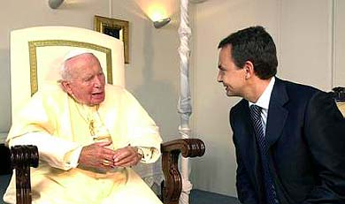
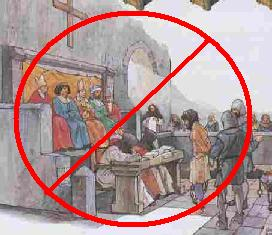

En el ámbito del Estado español, el propio de nuestra asociación, nos enfrentamos con una interpretación de los derechos humanos claramente deformadora de los mismos, así como con insalvables contradicciones internas en la Constitución de 1978 que, junto con el vigente Concordato y con el desarrollo de los derechos fundamentales a través de la leyes orgánicas, anulan cualquier consideración positiva de la libertad de conciencia.
Denunciar este corpus legislativo, de manera global y de manera pormenorizada, constituye, pues, nuestra prioridad en materia de acciones y campañas a emprender para poner de manifiesto las graves discriminaciones que padecen los ciudadanos no adscritos a una confesión religiosa y promover las necesarias reformas constitucionales y legislativas tendentes a conseguir la absoluta igualdad entre creyentes, indiferentes y no creyentes en el ejercicio de los derechos fundamentales.
Las actuaciones que emanen de nuestro Plan de Acciones y Campañas de 2005 se centrarán, por lo tanto, de manera prioritaria, en los puntos siguientes:
Constitución española de 1978. Artículo 10.2
La Constitución española, en su artículo 10.2, nos remite de manera directa a la Declaración Universal de Derechos Humanos de 1948 en lo que a la interpretación de los derechos fundamentales se refiere. Para un ciudadano exigente, cualquier otra interpretación que se permitan los poderes públicos debería ser considerada como pura y dura prevaricación:
Las normas relativas a los derechos fundamentales y a las libertades que la Constitución reconoce se interpretarán de conformidad con la Declaración Universal de Derechos Humanos y los tratados y acuerdos internacionales sobre las mismas materias ratificados por España.
Veamos, pues, en qué términos están consideradas la libertad de conciencia y la libertad religiosa en tales textos de obligada referencia:
DU 1948, artículo 18: Toda persona tiene derecho a la libertad de pensamiento, de conciencia y de religión; este derecho incluye la libertad de cambiar de religión o de creencia, así como la libertad de manifestar su religión o su creencia, individual y colectivamente, tanto en público como en privado, por la enseñanza, la práctica, el culto y la observancia.
Al hacer la dicotomía religión / creencia (se supone, pues, que creencia no religiosa), reconoce la DU el contenido positivo de cualquier tipo de convicciones, como el humanismo ateo, el agnosticismo, el deísmo no inscrito en ninguna confesión religiosa, el eclecticismo religioso “a la carta” no sujeto a la tutela de ningún clero, etc., etc., etc.
Y, en lo que se refiere a otros acuerdos internacionales sobre la misma materia, los de rango superior son el Convenio Europeo de 1950 y la Carta de Derechos Fundamentales de la Unión Europea de 2000. Veamos en qué términos se contemplan allí las convicciones religiosas y las no religiosas:
CE 1950, artículo 9.1: Toda persona tiene derecho a la libertad de pensamiento, de conciencia y de religión; este derecho implica la libertad de cambiar de religión o de convicciones, así como la libertad de manifestar su religión o sus convicciones individual o colectivamente, en público o en privado, por medio del culto, la enseñanza, las prácticas y la observación de los ritos.
Al establecer la dicotomía “su religión / sus convicciones”, ¿hay algo en este texto que permita reducir las convicciones no religiosas a mera “ausencia de convicciones” y a conceder los derechos que de este artículo se derivan únicamente a las confesiones religiosas?
En cuanto a la Carta de Derechos Fundamentales de la Unión Europea de 2000 se refiere, la redacción es idéntica a la de 1950 (artículo 10.1 de la Carta).
Sólo, pues, mediante la utilización abusiva de una normativa de rango inferior, como es el Tratado de Amsterdam, por citar un ejemplo europeo, y gracias a las flagrantes e intencionadas contradicciones en nuestra Constitución y en su desarrollo a través de las leyes orgánicas, se han podido conceder derechos a las convicciones religiosas sustrayéndolos a las no religiosas, cuya consideración en estricta igualdad es manifiesta desde la más elemental hermenéutica de los textos internacionales citados.
Desde este punto de partida, la Asociación Europa Laica emprenderá todas las actuaciones a su alcance destinadas a exigir a los poderes públicos la interpretación de los derechos fundamentales en virtud de la Declaración Universal de Derechos Humanos de 1948.
En este sentido, consideramos que argumentaciones como la utilizada por el Defensor del Pueblo ante la queja de un ciudadano, referida a los funerales católicos de Estado por las víctimas de los atentados del 11-M, vulnera de manera flagrante el artículo 10.2 de la Constitución.
Constitución española de 1978. Artículo 14:
Los españoles son iguales ante la ley, sin que pueda prevalecer discriminación alguna por razón de nacimiento, raza, sexo, religión, opinión o cualquier otra condición o circunstancia personal o social.
Hacer de este artículo una práctica cotidiana en la sociedad española debe ser igualmente una de nuestras prioridades.
Constitución española de 1978. Artículo 16:
Se garantiza la libertad ideológica, religiosa y de culto de los individuos y las comunidades sin más limitación, en sus manifestaciones, que la necesaria para el mantenimiento del orden público protegido por la ley.
Allí donde el individuo es sujeto del Derecho no puede serlo al mismo tiempo la comunidad y viceversa. Sólo los individuos poseen esa facultad que llamamos conciencia, mente, pensamiento, carácter que ontológicamente está ausente de cualquier grupo, ya sea de constitución “artificial” (como una asociación) o “natural” (el municipio, la nación, la comunidad de la que formo parte por nacimiento o residencia). Si la libertad de conciencia se atribuye como derecho a una comunidad, a quien en realidad se atribuye es a los gobernantes de la misma, que pueden decidir la religión o las religiones de sus gobernados, siendo más o menos tolerantes con otras convicciones.
La Asociación Europa Laica denunciará la contradicción insalvable establecida por el artículo 16.1 de la Constitución, que imposibilita el ejercicio de la libertad de conciencia como derecho inalienable de los seres humanos tomados de uno en uno.
Nadie podrá ser obligado a declarar sobre su ideología, religión o creencias.
Debemos emprender todas las acciones necesaria, a medida que los acontecimientos lo exijan, para que el artículo 16.2 de la Constitución no parezca una burla. Los ciudadanos españoles se ven constantemente obligados a declarar, directa o indirectamente, sus convicciones religiosas:
En la declaración del IRPF.
Cada vez que matriculan a sus hijos e hijas en un colegio público o sostenido por fondos públicos.
Cada vez que un niño entra en clase de religión católica o en su alternativa.
Cada vez que un niño debe esperar, en situación de marginado, a que concluya una misa o un acto religioso realizado en la escuela en horario lectivo.
Todas aquellas situaciones que, en forma de denuncias directas o indirectas, lleguen a nuestra asociación evidenciando la vulneración de este artículo.
Ninguna confesión tendrá carácter estatal. Los poderes públicos tendrán en cuenta las creencias religiosas de la sociedad española y mantendrán las consiguientes relaciones de cooperación con la Iglesia Católica y las demás confesiones.
La mención explícita de la Iglesia Católica llama la atención de tal manera que olvidamos la vulneración esencial de derechos fundamentales contenida en este artículo, y caemos en la trampa de quienes pretenden reformarlo tan sólo en el sentido de suprimirla. El problema principal, la primera pregunta que debemos plantearnos como laicistas, previa a la mención explícita de la Iglesia Católica, es por qué los poderes públicos tendrán en cuenta únicamente las creencias religiosas e ignorarán las no religiosas, en un espíritu manifiestamente opuesto al artículo 10.2 de la misma Constitución y a la normativa internacional de rango superior examinada más arriba.
Lo que, de hecho, debe hacer el Estado es ignorar todas las convicciones particulares y garantizar a cada uno de sus ciudadanos, sin excepción, el ejercicio de sus derechos, en coherencia con el artículo 14 citado arriba.
Constitución española de 1978. Artículo 27:
Los poderes públicos garantizan el derecho que asiste a los padres para que sus hijos reciban la formación religiosa y moral que esté de acuerdo con sus propias convicciones.
Al hablar de formación religiosa y moral, deberíamos entender formación religiosa y/o formación moral, a la luz del artículo homólogo de la DU de 1948:
Artículo 26.3: Los padres tendrán derecho preferente a escoger el tipo de educación que habrá de darse a sus hijos.
No existe, pues, un mandato en el artículo 27.3 de la Constitución, de que la religión deba ser enseñada en la escuela. El artículo 26 de la DU no limita este derecho a los padres con convicciones religiosas excluyendo a los padres con planteamientos morales de otro tipo.
Si este derecho debe ser satisfecho en la escuela, debería serlo para todos y acoger todo tipo de morales particulares, sin restricción alguna, convitiéndolas en asignaturas, lo que es manifiestamente imposible. En otro caso, no hablamos de un derecho universal sino de un inadmisible privilegio (ANEXO 6).
Los acuerdos con la Santa Sede de 1976 y 1979
Los Acuerdos del Estado español con la Santa Sede de 1976 y 1979 mantienen vigente el Concordato de 1953, aunque modificado en la totalidad de sus artículos (ANEXO 7), lo que configura la existencia de un Derecho Eclesiástico del Estado manifiestamente opuesta a la primera frase del artículo 16.3 de la Constitución: “Ninguna confesión tendrá carácter estatal.”
La Asociación Europa Laica sostendrá y/o se sumará a todas las actuaciones laicistas que denuncien la inconstitucionalidad del Concordato y exijan su abrogación (y no simplemente su nueva revisión).
La ley orgánica de libertad religiosa de 1980
La Ley Orgánica de Libertad Religiosa de 1980 anula de un plumazo las creencias y convicciones no religiosas, reconocidas en un plano de igualdad con las religiosas en la DU de 1948 y en el Convenio Europeo de 1950. Y esto lo hace mediante un procedimiento tan burdo como citar, mutilándolo, el artículo 16.1 de la Constitución.
Así, la mencionada Ley reza en sus artículos 1.1 y 2.1:
El Estado garantiza el derecho fundamental a la libertad religiosa y de culto, reconocida en la Constitución…
La libertad religiosa y de culto garantizada por la Constitución…
De esta manera desaparece por encanto la “libertad ideológica”, y a lo largo de todo ese texto legal las creencias y las convicciones de carácter no religioso son privadas del reconocimiento de cualquier contenido (fundamentalmente de un contenido moral o ético), y se alude a las mismas como “ausencia de creencias” o “ausencia de convicciones”. No puede haber, desde el punto de vista político y jurídico, un mayor y más brutal atentado al pensamiento humanista y a la libertad de conciencia.
Desde esta deformación se pasa de inmediato al reconocimiento de privilegios presentados como derechos en ámbitos tan fundamentales como la enseñanza. Desde el artículo 26.3 de la DU de 1948 a la redacción del artículo 27.3 de la Constitución de 1978 (ambos citados arriba), la Ley Orgánica de Libertad Religiosa de 1980 llega al siguiente enunciado: Recibir e impartir enseñanza e información religiosa de toda índole, ya sea oralmente, por escrito o por cualquier otro procedimiento; elegir para sí, y para los menores no emancipados e incapacitados, bajo su dependencia, dentro y fuera del ámbito escolar, la educación religiosa y moral que esté de acuerdo con sus propias convicciones.
No sólo la cuña “dentro y fuera del ámbito escolar” es una baza sacada de la manga, sino que toda la redacción de la Ley Orgánica de 1980 niega la posibilidad de contenidos morales no religiosos, interpretación que se traslada de inmediato a todas las leyes orgánicas que regulan el derecho a la educación.
Nuestra asociación sostiene desde hace varios años una campaña por la derogación de la Lay Orgánica de Libertad Religiosa de 1980, que será relanzada en 2005 (ANEXO 8).
Las leyes orgánicas que desarrolan el derecho a la educación.
En materia educativa nuestra asociación rechaza, pues, todas las interpretaciones que emanan de los Acuerdos de 1976 y 1979 y de la Ley Orgánica de Libertad Religiosa de 1980, alentadas por las contradiciones examinadas arriba en el texto de la Constitución.
La Asociación Europa Laica ha sostenido y sostiene diferentes acciones y campañas en demanda de una escuela pública y laica, que se reflejan en distintos textos, manifiestos y comunicados emitidos por la misma en los últimos años y/o a los que se ha suscrito. Nuestro Plan de acciones y campañas de 2005 recoge las actuaciones más recientes, que están en pleno desarrollo.
La ley orgánica de protección a la libertad de conciencia de 1995.
La interpretación amparada por el artículo 16.3 de la Constitución y desarrollada desde la Ley Orgánica de Libertad Religiosa de 1980 se traslada también al Código Penal a través de la Ley Orgánica De los delitos contra la libertad de conciencia, los sentimientos religiosos y el respeto a los difuntos de 1995 que lo modifica.
La Asociación Europa Laica denuncia los artículos del vigente Código Penal como directamente atentatorios a la DU de 1948 y al artículo 14 de la Costitución.
Código Penal, artículo 522. Incurrirán en la pena de multa de cuatro a diez meses:
Los que por medio de violencia, intimidación, fuerza o cualquier otro apremio ilegítimo impidan a un miembro o miembros de una confesión religiosa practicar los actos propios de las creencias que profesen, o asistir a los mismos.
Nos preguntamos por qué los miembros de una asociación no religiosa no somos objeto de la misma protección si concurrimos, por ejemplo, a un acto de exaltación de los valores republicanos o a una ceremonia de homenaje a un mártir de la libertad de pensamiento como Giordano Bruno, y somos objeto de violencia, etc. Se nos dirá que ya otros artículos del código penal nos protegen, y volveremos a preguntarnos por qué esos mismos artículos no les bastan como protección a los miembros de una confesión religiosa. ¿Dónde queda el artículo 14 de la Constitución, y cómo es aceptable un código penal en el que una misma conducta es delito tipificado en un artículo para un tipo de ciudadanos y no lo es para otros?
2º. Los que por iguales medios fuercen a otro u otros a practicar o concurrir a actos de culto o ritos, o a realizar actos reveladores de profesar o no profesar una religión, o a mudar la que profesen.
Aquí el clericalimo moderno se ha dejado una laguna, en cuanto a los actos reveladores de profesar o no profesar una religión, y deberíamos aprovecharla recurriendo a la denuncia por vía penal cada vez que se celebre una misa en un centro de enseñanza durante el horario lectivo.
Artículo 523: El que con violencia, amenaza, tumulto o vías de hecho, impidiere, interrumpiere o perturbare los actos, funciones, ceremonias o manifestaciones de las confesiones religiosas inscritas en el correspondiente registro público del Ministerio de Justicia e Interior, será castigado con la pena de prisión de seis meses a seis años, si el hecho se ha cometido en lugar destinado al culto, y con la de multa de cuatro a diez meses si se realiza en cualquier otro lugar.
Volvemos a idéntica discriminación -¡en materia penal!- entre ciudadanos con convicciones religiosas -reconocidas por el registro del Ministerio de Justicia- y ciudadanos con convicciones no religiosas. ¿Por qué un acto público con motivo del orgullo gai o una manifestación hasta el busto de Manuel Azaña, para rendirle homenaje, no debería gozar de idéntica protección, atendiendo a los artículos arriba citados de la DU que deben inspirar nuestras leyes? ¿Qué ocurre si, ante el estacionamiento de una procesión de Semana Santa bajo una ventana abierta, un ciudadano está celebrando una fiesta en su casa y la música alta “perturba” el acto? Este artículo es un atentado directo a los principios elementales de libertad y de igualdad.
Artículo 524: El que en templo, lugar destinado al culto o en ceremonias religiosas, ejecutare actos de profanación en ofensa de los sentimientos religiosos legalmente tutelados, será castigado con la pena de prisión de seis meses a un año o multa de cuatro a diez meses.
Muy bien. A ninguno de nosotros se nos ocurre entrar en un templo para impedir que los fieles de una confesión religiosa se entreguen a sus iluminaciones. ¿Pero por qué no goza de idéntica protección la sede de un congreso ateo o de una asociación de lesbianas que se reúnen los viernes para hacer yoga tántrico? A la luz de los derechos fundamentales, los artículos del código penal en materia de libertad religiosa y de libertad de conciencia enuncian dislate tras desatino.
Artículo 525.
Incurrirán en la pena de multa de ocho a doce meses los que, para ofender los sentimientos de los miembros de una confesión religiosa, hagan públicamente, de palabra, por escrito o mediante cualquier tipo de documento, escarnio de sus dogmas, creencias, ritos o ceremonias, o vejen, también públicamente, a quienes los profesan o practican.
¿Qué ocurre con los sentimientos de los agnósticos, los ateos, los indiferentes, los que tienen profundamente arraigada en su modo de sentir y de pensar la tradición de pensamiento científico y humanista, que, desde la Ilustración y su posterior desarrollo, ha dado lugar a cosas tan valiosas para nosotros como la democracia y los derechos humanos? Desde luego, no se nos ocurriría solicitar que las ofensas y los escarnios a nuestras creencias e ideologías se convirtieran en delito, porque eso sería la muerte de la libertad de expresión. Pero no podemos aceptar “respetuosamente” como algo legítimo el hecho de que determinadas ideologías -las de corte religioso- estén blindadas y nos sitúen constantemente, a la hora de expresar nuestro pensamiento y nuestros sentimientos hacia las mismas, en las puertas del delito. Casos recientes, como la sentencia condenatoria a un videojuego con nazarenos y a una página de internet con la virgen, amén de lo suscitado por la obra teatral “Me cago en Dios”, vienen a ilustrar este añadido atentado a los principios de libertad y de igualdad en materia de convicciones. La blasfemia como delito se oculta aquí bajo la ofensa de los sentimientos de un determinado perfil de ciudadano, que parece disfrutar de derechos de los cuáles los demás somos desposeídos.
En las mismas penas incurrirán los que hagan públicamente escarnio, de palabra o por escrito, de quienes no profesan religión o creencia alguna.
La única protección en este caso es la “ausencia de religión o de creencia”. Es decir, no existen, desde el punto de vista de la Ley Orgánica de 1980, cuya interpretación llega al código penal a través de la Ley Orgánica de 1995, creencias y/o convicciones no religiosas. No somos nada, no pensamos, no sentimos, no tenemos propuestas éticas y morales…, en manifiesta oposición a los textos internacionales a los que se refiere el artículo 10.2 de la Constitución.
La ley orgánica que regula el derecho a la asociación de 2002.
Artículo 1. Objeto y ámbito de aplicación.
La presente Ley Orgánica tiene por objeto desarrollar el derecho de asociación reconocido en el artículo 22 de la Constitución y establecer aquellas normas de régimen jurídico de las asociaciones que corresponde dictar al Estado.
El derecho de asociación se regirá con carácter general por lo dispuesto en la presente Ley Orgánica, dentro de cuyo ámbito de aplicación se incluyen todas las asociaciones que no tengan fin de lucro y que no estén sometidas a un régimen asociativo específico.
Se regirán por su legislación específica los partidos políticos; los sindicatos y las organizaciones empresariales; las iglesias, confesiones y comunidades religiosas; las federaciones deportivas; las asociaciones de consumidores y usuarios; así como cualesquiera otras reguladas por leyes especiales.
Las asociaciones constituidas para fines exclusivamente religiosos por las iglesias, confesiones y comunidades religiosas se regirán por lo dispuesto en los tratados internacionales y en las leyes específicas, sin perjuicio de la aplicación supletoria de las disposiciones de la presente Ley Orgánica.
La Ley orgánica reguladora del derecho de asociación de 2002 viene a consagrar de manera definitiva la existencia de un Derecho Eclesiástico del Estado que se fragua por la pervivencia del Concordato de 1953 a través de los Acuerdos de 1976 y 1979 y concede completa impunidad a la Iglesia Católica tras los escándalos y delitos financieros inmediatamente anteriores a la aprobación de la misma, así como espacios negadores de los derechos humanos en el funcionamiento interno de determinadas organizaciones religiosas.
La Asociación Europa Laica exige que, tanto en materia de financiación como de garantías de domocracia interna y de respeto a los derechos fundamentales de sus miembros, las organizaciones de carácter religioso se rijan por las mismas normas de derecho común que son válidas para las organizaciones no religiosas.

Ejecución del plan de acciones y campañas
El grado de ejecución del presente Plan de Acciones y de Campañas a lo largo del año 2005 dependerá de las disponibilidades de los actuales equipos de trabajo y de sus posibilidades reales de ampliación. En todo caso, se mantedrán de manera prioritaria las acciones y campañas que ya están en marcha, y se potenciarán las que se promuevan desde compromisos reales de crear comisiones de trabajo que refuercen las actuales y se ocupen de su puesta en marcha y de su seguimiento.
Como resultado de las modificaciones introducidas por la Asamblea de 11 de diciembre de 2004 al proyecto presentado por la Junta Directiva, se añaden los siguientes apartados:
Puesta en marcha de una comisión de trabajo consagrada a la búsqueda de recursos pedagógicos y didácticos, encaminada a la educación para una sociedad racional.
Creación de un observatorio laicista, bajo la responsabilidad de la Asociación Granada Laica.
Proyecto de un acto público, en el presente año, para rendir homenaje a la obra laicista de Gonzalo Puente Ojea y promover su difusión.
Se recuerda que el seguimiento centralizado de las acciones y campañas, además de lo recogido en las sucesivas actualizaciones de nuestra web, se hace de manera pormenorizada a través de Lista Europa Laica, desde donde también se emiten, con una periodicidad mensual, nuestros boletines electrónicos:
http://es.groups.yahoo.com/group/listaeuropalaica/
Los miembros de nuestra asociación disponen además de un foro privado, que funciona como asamblea virtual permanente, desde el cual los asociados pueden canalizar su participación activa en nuestra organización:
http://es.groups.yahoo.com/group/forosocioseuropalaica/
Volver a la sección Sociedad y religión
Comentarios
Comments powered by Disqus